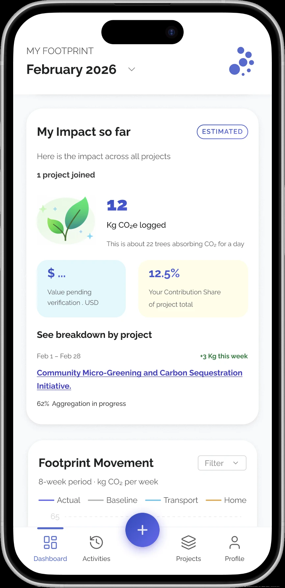
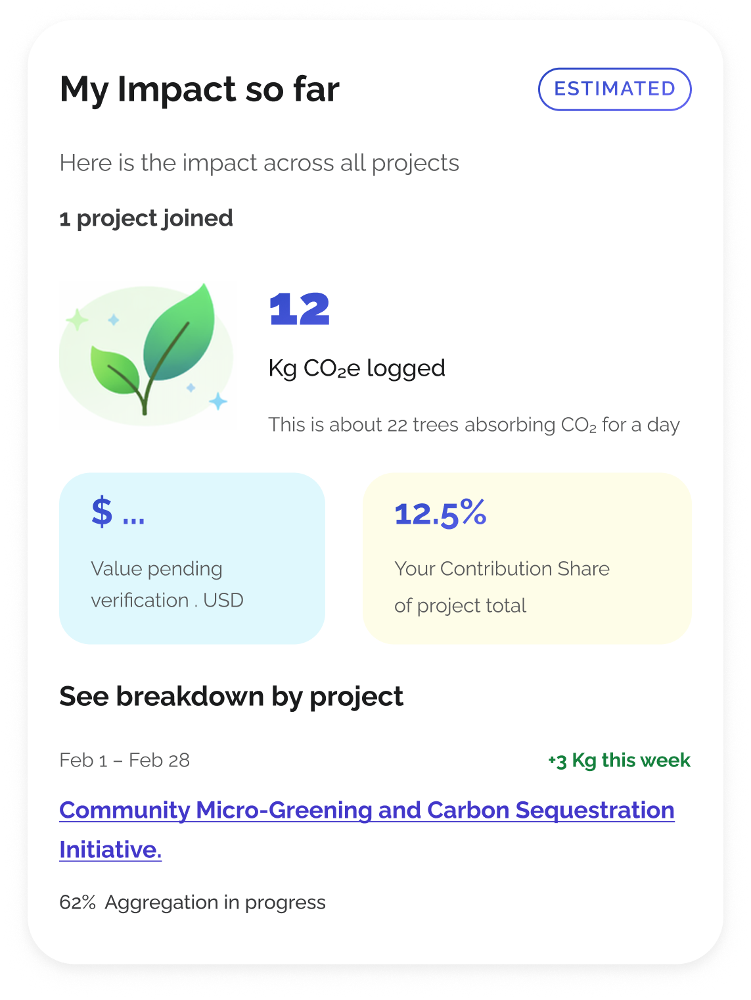
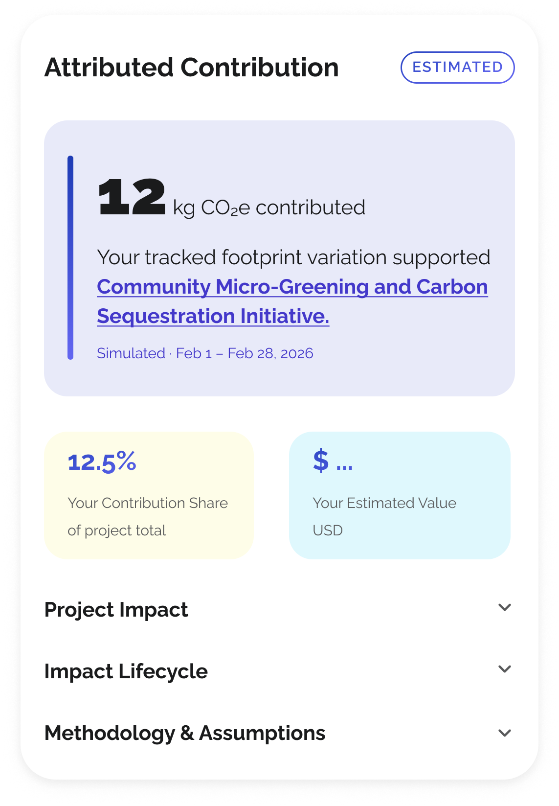
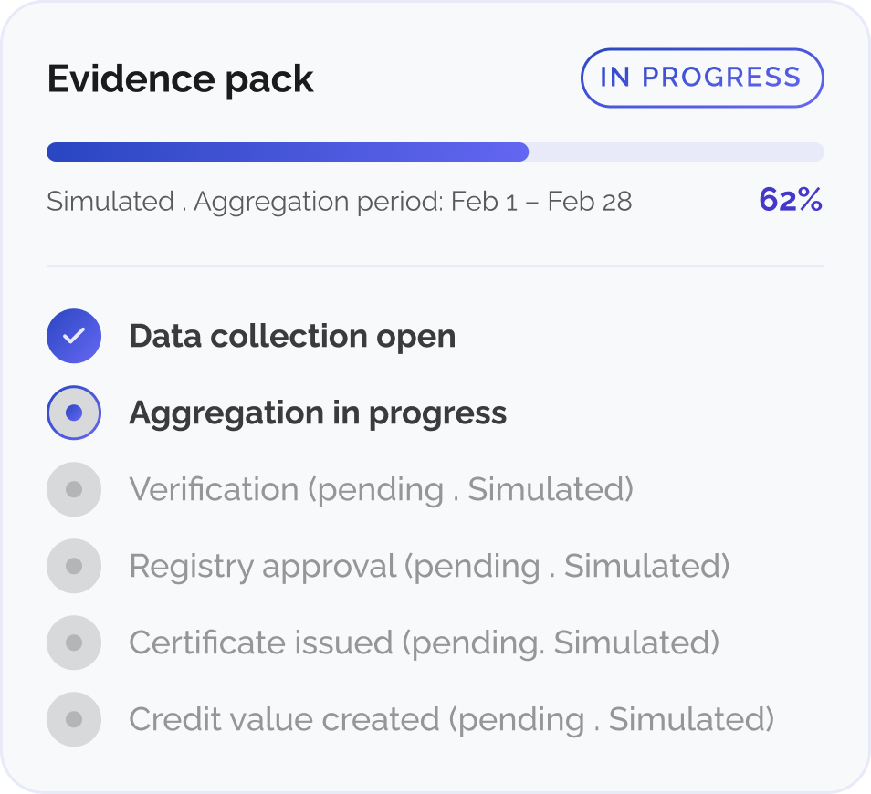
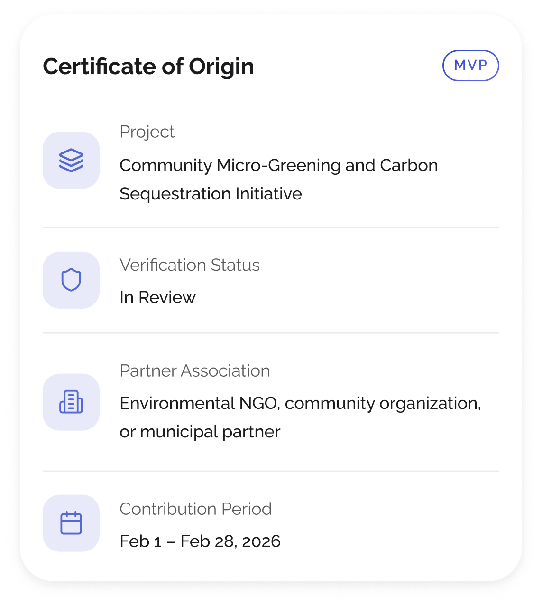
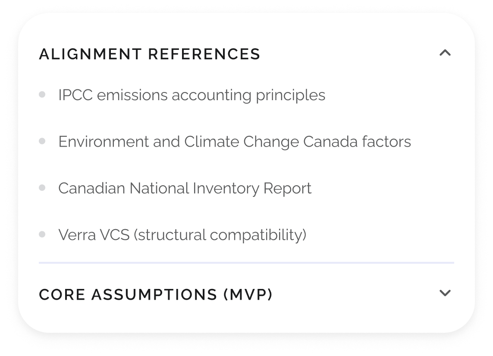
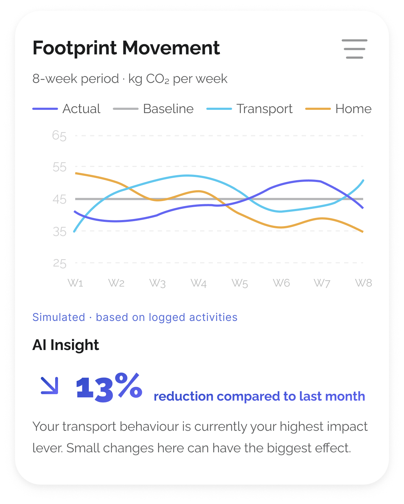

iOS app design · 2026

Turning individual
climate action into shared,
verifiable impact.
Summary
I joined Persustain as a five-year investor vision with no product behind it: individual climate actions, aggregated into shared projects, eventually verified and carbon-market-ready. As Lead Product Designer, I had four months to turn that vision into a working MVP for an incubator milestone, directing a cross-functional team of three.
The easiest build was a carbon tracker — it fit the timeline and the tech stack. I chose the harder path: treat tracking as the entry point into the participation system the client was actually pitching, then design an interface that could make that ambitious roadmap tangible without claiming any future capability was already live.
That decision shaped everything that followed — the product architecture, information architecture, and a trust system (Estimated / Pending / Simulated) that clearly distinguished what was real from what was still to come. By the end of Phase 1, the client had a working MVP that demonstrated the broader vision to investors and funded a Phase 2 engagement to build on it.
The demo in action
An interactive demo recreated for this portfolio, not the original build — state persists as you navigate.
What Phase 1 delivered
Keep reading
01
The Strategic Pivot
I joined Persustain at zero-to-one: an investor deck, no product, and no team. I assembled a cross-functional team from within ISM Creative — balancing required domain expertise with available capacity — and led Phase 1 from product strategy and design through delivery. I partnered closely with engineering on technical feasibility and tech stack alignment, while they owned system architecture and implementation.
The client's five-year strategy connected individual climate action to shared projects, third-party verification, and eventual carbon-market participation. None of it existed yet as a product: no user journeys, no information architecture, no answer to the most basic question — what does someone actually do inside this app? And we had four months to an incubator milestone review, leaving little room for experimentation or major course corrections. So the challenge was deciding what kind of product this needed to be before a single screen could be justified.
I needed to answer a more fundamental question: were we building the right product?
If the goal was simply delivering the MVP on time, a carbon tracker was the obvious answer — it fit the timeline, reduced technical complexity, and followed a familiar pattern used across the industry. But it would have delivered the easiest fraction of the client's vision and none of what made it distinctive. Before committing four months to it, I needed to know whether that five-year vision addressed a real gap, or whether we'd just be building a nicer version of an app that already existed five times over.
To answer that question without the budget or timeline for a dedicated research phase, I ran a rapid competitive review across five climate apps and analysing 80+ public reviews to identify recurring onboarding and retention patterns. I was trying to understand why people stopped using these products after the initial excitement wore off, not looking for interface inspiration. Since this was secondary research rather than primary validation with Persustain users, strong signals were enough to bet a hypothesis on. Two patterns stood out.
Key insight
The Efficacy Gap
Gamification landed fine, but it couldn't answer the question underneath it. People weren't asking “how do I log more,” they were asking “does this matter at all.” Without a visible line from personal effort to real-world impact, the habit lost its reason to exist.
Key insight
The Trust Gap
When a carbon number changed with no visible reason, people stopped trusting the number, then the app.
Both pointed the same direction: the opportunity wasn't a better tracker. It was using tracking as the entry point into something bigger.
The strategic shift
This changed the product question completely.
From
How do we build a better carbon tracker?
To
How might we help people see their individual actions as part of a larger collective outcome?
That reframe became the brief for every decision that followed.
02
Defining the Product System
A hypothesis isn't a spec. The investor deck described concepts like community projects, verification, certificates, carbon value — none of them existed as product entities, and without a shared definition, design and engineering would each have built their own interpretation of the vision.
I ran an OOUX (Object-Oriented UX) workshop with the client and engineering to define the platform's core objects and how they related, then synthesised it into a canonical object map that anchored every user journey, spec, and implementation conversation that followed.
User
profile · baseline · location
Phase 1Activity
logged action · quantity · estimate
Phase 1Shared Climate Project
aggregation period · participants
Phase 1Evidence Pack
aggregated data · methodology
Phase 1Verification
review status · reviewer
SimulatedCertificate
origin · registry reference
SimulatedValue
contribution share · estimated value
SimulatedFrom there I modelled the full six-stage lifecycle. Phase 1 built the first two stages as real, working states. The remaining four stayed simulated by design, giving Phase 2 a defined starting point without pretending external infrastructure existed yet.
Actions
daily activity, logged
BuiltAggregation
combined into shared projects
BuiltVerification
reviewed and validated
SimulatedRegistry
submitted to carbon registries
SimulatedCertification
approved and certified
SimulatedValue
real, measurable outcome
SimulatedTry it out
Walk through all six stages screen by screen in the demo.
The next challenge was making a technically complex system understandable. Rather than exposing that machinery — evidence packs, registries, verification workflows — I organised the product's information architecture around two destinations that answer the two questions a user would have.
“Did my actions matter?”
A personal emissions summary sitting next to the shared project that activity supports.

“Where did my contribution go?”
One place that shows the whole system — the project, the lifecycle it sits in, what’s verified and what isn’t yet — with methodology and assumptions visible alongside it.


Together they created one progressive path: personal activity → the project it supports → the lifecycle that project sits in.
A footprint number and a project name — almost none of the system behind it.
The lifecycle, the trust states, the methodology — deliberately surfaced, not hidden.
03
Designing for Trust
The client's roadmap ran from individual action all the way to verified carbon credits with market value. Cutting that from the product would have erased what made it distinctive. Showing it as already functional wouldn't have survived someone's first five minutes in the app. I needed both — the full ambition, and honesty about what was real today.
I specified two dimensions and kept them deliberately separate, so one could never be mistaken for the other.
Lifecycle status
Where is the project actually up to?
Trust state
What can the product truthfully claim?
based on data or documented assumptions.
dependent on future evidence or approval.
a future capability, intentionally not yet operational.
Every methodology and assumption behind a number stayed visible next to it. The product wasn't asking people to trust it — it was giving them what they needed to decide that for themselves.

A receipt-like card — project, status, partner, period — that gives an invisible contribution a proof-like structure.

Surfacing the methodology instead of burying it turns a black-box number into something you can interrogate.
The same principle governed how I scoped AI. Working with the AI developer, I set the boundary at interpretive, not authoritative: OpenAI could explain a trend in plain language, summarise an evidence pack, or help match a description to a known activity. It could not calculate or verify impact, issue credits, certify outcomes, or determine market legitimacy — those stayed tied to calculation sources, evidence, and later lifecycle stages that hadn't been built yet.

AI guardrails
interpretive, not authoritative
Could
Could not
Separating lifecycle status from trust states allowed us to communicate the long-term vision honestly without overpromising on current functionality. While user comprehension of these distinctions remains one of our primary Phase 2 research questions, the MVP delivered business value: the client reported that it successfully demonstrated the broader product roadmap to investors and incubator stakeholders without misrepresenting future capabilities as live.
04
Leading Cross-Functional Delivery
Leading and delivering the product required continuous collaboration with engineering, not a single hand-off. We held weekly cross-functional meetings alongside asynchronous updates, with focused working sessions whenever a decision required more than a status check.
Here's how ownership split across the team.
To bridge the gap between design and code, I built the core UX artifacts and lean design system in Figma, then set up the design system in FlutterFlow before delegating screen production to the design engineer. She designed the UI passes in Figma, and upon my review and approval, built those screens directly in FlutterFlow while I maintained oversight of critical flows and implementation specs. I guided her through regular critiques — evaluating usability, accessibility, visual fidelity, and whether the build faithfully reflected our agreed object model and lifecycle logic.
The frameworks we established in Phase 1 became most valuable during implementation, when product strategy, user friction and technical constraints had to be reconciled under a four-month deadline. Three decisions show how those trade-offs played out in practice.
Trade-off
Balancing input friction against calculation precision and AI boundaries.
One design review exposed a significant usability risk in the activity log. An early version asked for technical consumption inputs — exact kilowatt-hours, fuel burn rates, specific grid emission factors. Almost no everyday user knows these numbers precisely, and forcing them to guess introduced fatal onboarding friction.
I explored free-text logging instead (“boiled water with an electric kettle”), with the system inferring the rest, but engineering determined that reliably translating open text into every input Climatiq needed wasn't feasible in our timeline. More critically, it threatened our AI rule: letting an LLM estimate emissions would make it authoritative rather than interpretive.
We landed on a middle path: a searchable catalogue of familiar activities, OpenAI to help match a description to one, and the user entering only the single quantity they'd actually know — frequency, duration, distance. Climatiq calculated the estimate from there, shown as Estimated with its methodology attached. Less flexible than free text, but honest about its own certainty, and buildable in the time we had.
Activity log, as built
people enter only what they can know
Choose a known activity
A searchable catalogue of familiar activities, instead of technical consumption values.
Enter only what you know
Frequency, duration, distance or amount — nothing a person would have to look up.
See how the number was made
The result is presented as Estimated, with methodology and assumptions available.
Person
confirms the activity and one quantity
OpenAI
enriches or matches the description
Structured data
activity type, quantity, date
Climatiq
calculates the emissions estimate
Result
shown as Estimated, methodology attached
Trade-off
Balancing speed of production against architectural integrity.
I reviewed each engineering pass against standard heuristics — usability, accessibility, visual fidelity — but also against a deeper criterion: did the build still honour our agreed object model and lifecycle logic?
During one review, I noticed the interface had drifted back toward a conventional carbon tracker. The shared-project logic that made Persustain distinctive had fallen out of the screens. I traced the drift back to our object map and used that shared language — not a design opinion — to show what had disappeared and why it mattered. We rebuilt the flow so personal tracking remained connected to the shared project. The object map became the reference point whenever implementation started drifting toward the familiar.
Trade-off
Balancing stakeholder momentum against research legibility.
The client's broader roadmap was full of viable ideas — gamification layers, financial rewards, personalisation, social mechanics. Midway through Phase 1, stakeholder momentum built around introducing a rewards and incentives mechanism into the MVP.
The temptation was high, but layering in external incentives too early would lose the signal we were actually testing for. I set one filter for what made it into the four-month build.
The scope filter I set
Does this strengthen the core participation loop, or make it impossible to evaluate on its own?
If we tested rewards and our baseline participation model at the same time, we'd never know whether people stayed for the collective impact or were just clicking for points. We agreed to hold rewards for Phase 2 — not because the feature was weak, but to keep the MVP's validation signals clean.
05
Outcomes & What's Next
Phase 1 shipped on the agreed four-month timeline for the incubator milestone. It turned an investor deck into something stakeholders could actually use, and the client funded Phase 2 to continue — real evidence of delivery and client confidence.
Internal testing confirmed that our core data flows, calculations and lifecycle progression held up under team use. What we haven't tested yet is public adoption. Because Phase 1 delivered as an incubator MVP rather than an open consumer release, long-term activation and behavioural validation are still ahead of us.
Whether users understand how their individual activity contributes to a shared project
Comprehension
Whether Estimated, Pending and Simulated build credibility or just add friction and confusion
Trust
Whether the shared project page gives people a stronger reason to return than standalone personal tracking
Retention
Once we have clear answers to these, we can set realistic targets for daily use and retention.
After that, the biggest test will be how the app handles delays or failed goals. It is easy to build trust when everything goes right — the real challenge is keeping that trust when a project falls behind.
06
Reflection
What stayed with me most was that the hardest product work happened before interface design. The challenge wasn't simply turning a vision into screens, but creating enough structure — objects, relationships and rules — for a team to make consistent decisions together.
I also learned that a well-defined system only matters if it survives execution. Keeping the product aligned required ongoing judgment and a shared language across business, design and engineering.
The trust-state pattern (Estimated, Pending, Simulated) is the decision I'm proudest of, and the one I still consider a hypothesis. We designed it to make uncertainty understandable; whether users actually experience it as trustworthy is something Phase 2 will need to prove.
Product design isn't always about removing complexity. Sometimes it's about organising complexity so people can understand what is true, what comes next, and what they can confidently do.